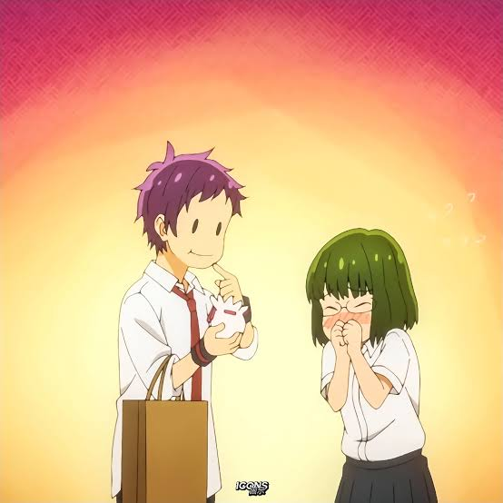
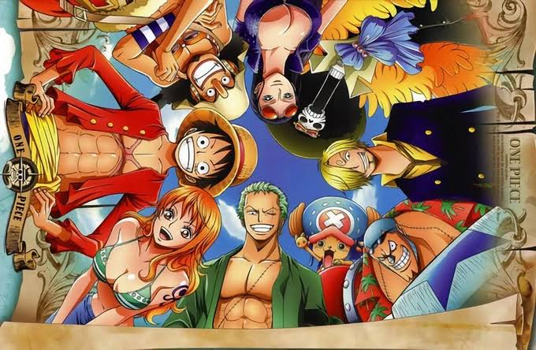
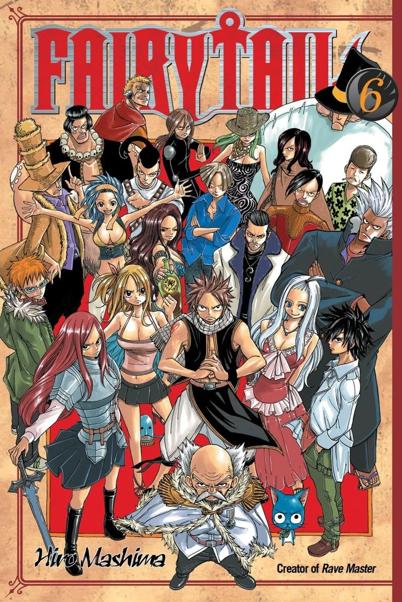

Tohru should have ended with Sakura, not Yuki.

Horimiya
This show ended up with pairing the side characters Tohru and Yuki while the people whom they both rejected, Yanagi and Sakura were shipped at the end. I really think that this should not have been the case as the dynamics of Tohru and Sakura were way better and Yanagi was better off with Yuki rather than with Sakura. This would have been a 10/10 show if not for this and even though I may have rewatched it 5 times, it is a good anime at most.
Agree or not?
SAO would be one of the greatest if only 2 seasons counted.
Sword Art Online
And counting the movie "progressive" too.
If we see the just the first and second season, counting the first movie too and ignore the rest of the series, SAO can be considered as one of the greatest ever written animes ever. The seasons after that added the harem elements, too much and ruined the entire show and made it less about Kirito and Asuna which was one of the major elements of the show. Other things, this was one of the first animes which introduced these type of stories which are overused and slop nowadays but at that time, this was such a great anime and the author really messed up this hard to mess up show.
Agree or not?
One Piece is overrated.

One Piece
Wait lemme explain
I am saying this as someone who has catched up to the most recent episode of this anime, that the pacing is absolutely horrible. I think the reason they switched to a 12 episode at once format instead of one episode a week is because people were complaining about the pacing too much, and they wanted a cover to hide it because what do you mean one villian fight was 20 eps long so people lit had to wait 20 weeks just to finish one fight? It gets boring so so easily and I too recently caught up as I had nothing else to do otherwise I had already dropped it and now, the story feels a lot duller and i always watch at 2x because that feels like the normal speed and the story gets a lot boring over time too. So I really think that it is overrated just because of the pacing and how it makes the story dull. Now it feels like I have been catching up to it just for the sake of it, not because it is fun.
Agree or not?
Dragon ball is slop.

Dragon Ball
Yes and I have watched all of it
As someone who has watches every dragon ball series, i can proudly say that everything is just powercreep slop because what do you mean the cycle is just new power stronk opponent agen stronger opponent new power change hair change hair rahh... But except for the long ass fights and horrible pacing the characters are entertaining and it is funny but that only covers a small portion of it and again the powerups and powercreeps are absolutely insane almost too much even for an anime.
Agree or not?
Fairy Tail is Awesome

Fairy Tail
Very Very Underrated.
Not really a hot take but I would legit put fairy tail alongside some of the greatest anime of all time because it is so so good and this is not really a hot take but this anime is legit so goated. It gets criticism for its insane plots but that is the best part about this and people just dont get the thrill of this and overlook this anime but it is crazy literally its like the second best anime after bleach for me because oh my god it is absolute peak peaker peakest(second).